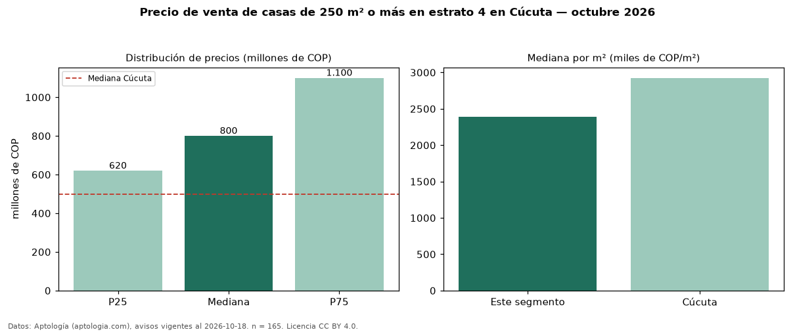

Precio de venta de casas de 250 m² o más en estrato 4 en Cúcuta — octubre 2026
En Cúcuta, la mediana de precio de venta de casas de 250 m² o más en estrato 4 es COP 800 millones, según 165 avisos vigentes. Eso es 42 % más que la mediana de las casas en estrato 4 en venta de Cúcuta (COP 565 millones, n = 463); este segmento reúne el 36 % de esos avisos. Por metro cuadrado, la mediana es COP 2,39 millones/m² (n = 164), 22 % por debajo de las casas en estrato 4 en venta de Cúcuta (COP 3,07 millones/m²). El área mediana anunciada es 313 m². El segmento con más oferta es el de 3 o más habitaciones (162 avisos, mediana COP 800 millones). La administración mediana declarada es COP 250.000 al mes (n = 19). La mitad central de los avisos va de COP 620 millones a COP 1,10 mil millones (razón 1,8), una dispersión moderada. La mediana de todas las casas en venta de Cúcuta es COP 500 millones (+60 % de diferencia). Datos: Aptología (aptologia.com), CC BY 4.0 — https://www.aptologia.com/venta/cucuta. Archivos: PDF, CSV con las cifras y gráfica PNG.

| Avisos únicos | 165 |
|---|---|
| Percentil 25 | COP 620.000.000 |
| Mediana | COP 800.000.000 |
| Percentil 75 | COP 1.100.000.000 |
| Mediana por m² | COP 2.392.145 |
Fuente: avisos vigentes de portales inmobiliarios recopilados por Aptología, deduplicados (mínimo 30 avisos únicos por celda). Precios pedidos, no cerrados. Fecha: 2026-10-18.